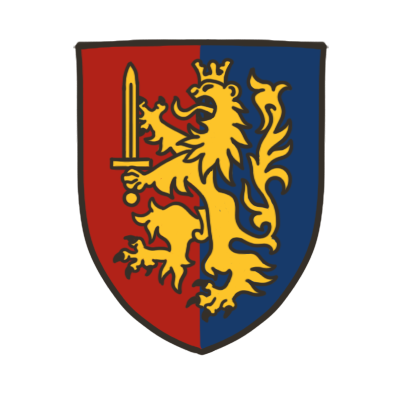
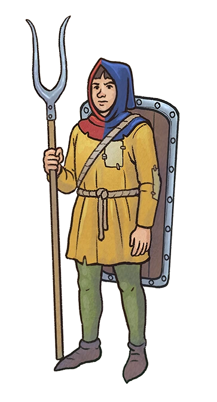
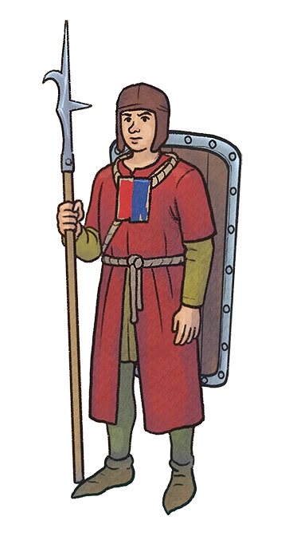
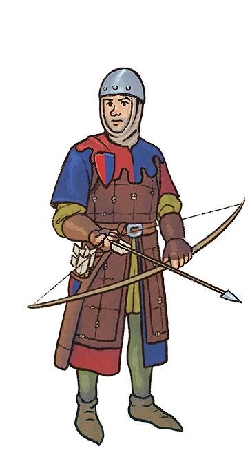
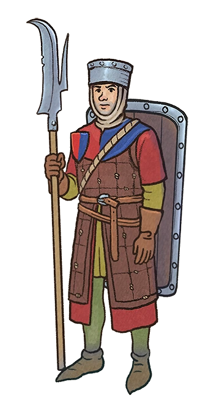
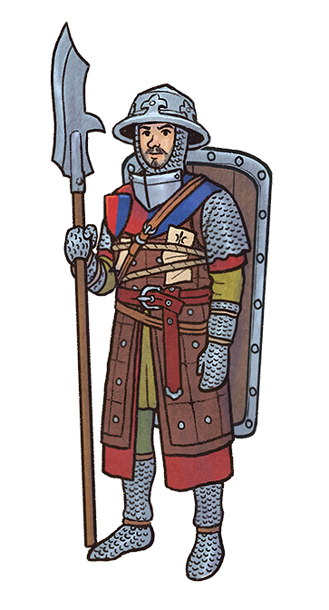
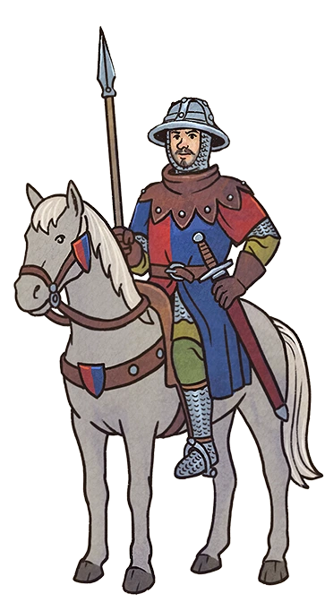
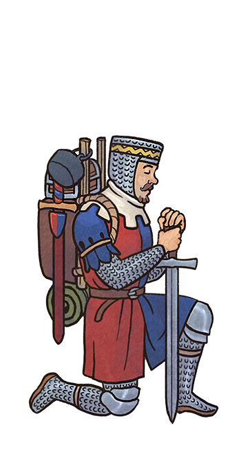
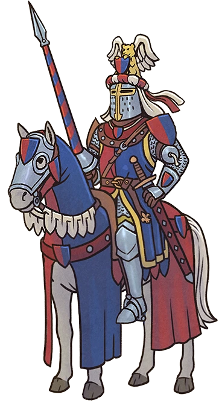
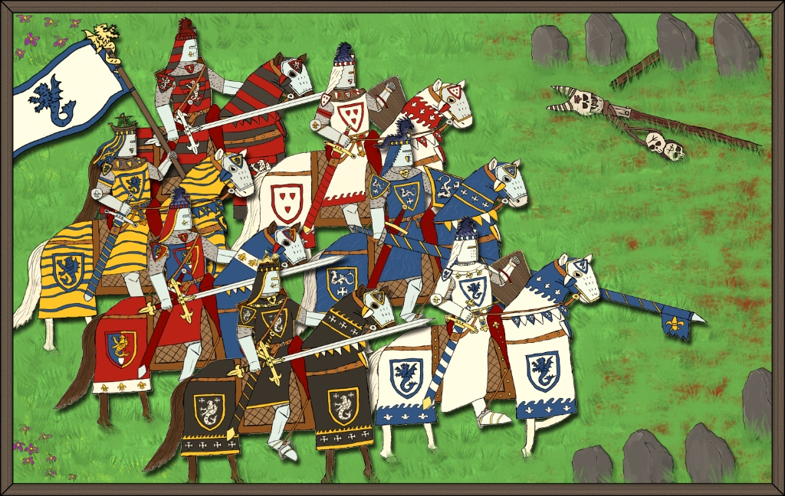

Gölün Hanımı'nın kutsal lütfuyla kurulan 13 kadim dükalık, Artenois, Herrimaults, bağımsız Royal Archers ve kutsal Göl Tarikatı (Order of the Lake) asırlardır dimdik ayakta. [BRE] birliği, tarihi kural kitaplıklarından 480+ savaşçının omuz omuza çarpıştığı devasa çok oyunculu hat savaşlarına uzanan yaşayan bir kraliyet otoritesidir.
Huebald de Gasconnie, Yeşil Şövalye'nin rehberliğinde Kutsal Göl'de beliren Gölün Hanımı'ndan kutsal kaseyi kabul ettiğinde, kadim dükalıklar ve kutsal Göl Tarikatı (Order of the Lake) tek bir krallık sancağı altında ebediyen kenetlendi.
Bretonnia, İmparatorluk Takvimi'ne göre 977 yılında Krallığın Kralı ve Couronne ile Gasconnie Lordu Huebald de Gasconnie'nin dağınık kabileleri birleştirmesiyle doğdu. Bu platform, 20 yılı aşkın süredir hem Warhammer fantezi evreninin en kapsamlı kural, ordu, dükalık ve Order of the Lake (Göl Tarikatı) kütüphanesini muhafaza etmekte; hem de [BRE] klanı çatısı altında yüzlerce oyuncunun yer aldığı taktiksel hat savaşlarını tek bir hanedan sancağı altında toplamaktadır.
Bu kraliyet arşivi hiçbir zaman geçici oyun heveslerine boyun eğmez. Bizler sanal cephelerde binlerce neferi tek bir düdük ve borazan sesiyle senkronize eden, disiplini ve şerefi en üstün değer kabul eden bir hanedanlık kurumuyuz.
"Bir Bretonnia şövalyesi asla sırtından vurmaz, zayıfı korur ve Kralın sancağı düştüğünde bile son nefesine kadar atını düşmanın üstüne sürer."
Huebald de Gasconnie — Krallığın Kralı ve Couronne ile Gasconnie Lordu (977 — 1005 IC)Couronne ve Gasconnie'den Order of the Lake (Göl Tarikatı), Herrimaults & Royal Archers ve sınır vassal lordluklarına kadar krallığın egemen güçlerinin ve klanlarının orijinal logoları ve resmi sancakları.
"Par le Cœur et l'Épée!"
Couronne, Krallığın Kralı ve Couronne ile Gasconnie Lordu Huebald de Gasconnie'nin yüce tahtının ve Gölün Hanımı'nın en ulu katedralinin bulunduğu başkent dükalığıdır. Dünyanın en safkan savaş atları burada yetiştirilir.
Aşağıdaki 8 rütbe, Bretonnia topraklarında en yoksul tarladan krallığın en soylu şövalyelik mertebesine kadar uzanan askeri ve toplumsal yükseliş yolunu simgeler.

"Your journey begins in a dukedom with nothing but rags on your feet..."
Tarlada doğmuş, lorduna vergi ödeyen ve krallık tehlikeye girdiğinde kaba mızraklarla cepheye sürülen nefer.

"Köyün lordu tarafından kırmızı cüppe giydirilip elde tutulan demir uçlu kargı."
Beastmen akınlarına karşı yerel kaleleri savunan, basit deri kalkan ve mızrakla donatılmış milis gücü.

"Porsuk ağacından yapılma büyük yay ve zehirli kazıklarla düşmanı gökten vuran gözcü."
Bretonnia hat savaşlarında şövalyeler hücuma kalkmadan önce düşman saflarını ok yağmuruyla seyrelten uzman birlik.

"Demir kask, kalkan ve teber ile lordunun sancağını omuzlayan çelik hat askeri."
Bretonnia'nın piyade omurgası. Süvari hücumlarına karşı kalkan duvarı örüp hattı korumakla görevlidir.

"Zincir zırh kuşanmış, topuz taşıyan ve hatların kırılmasını engelleyen kıdemli komutan."
Köylü taburlarını düzende tutan, düşman baskısı altında ricat emri verilmedikçe bir adım geri atmayan tecrübeli hat çavuşu.

"Hızlı rounsey atları üstünde kanatları süpüren, topçuları avlayan çevik keşif süvarisi."
Bretonnia ordusunun gözü kulağı. Düşman kaçış kollarını yakalamak ve ağır şövalyelerin kanatlarını güvenceye almakla mükelleftir.

"Lordunun önünde diz çöküp kılıcı taşıyan, şövalyelik yemini etmeye hazırlanan asil aday."
Şövalyenin zırhını, savaş atını ve sancağını koruyan; muharebede efendisinin yanında dövüşerek liyakat kazanan asil kan.

"Tam çelik zırh ve kutsanmış mızrakla destrier üstünde düşman saflarını ezen şampiyon."
Bretonnia'nın yaşayan efsanesi. Gölün Hanımı'na ve krala sadakat yemini etmiş, tek bir hücumuyla meydanın kaderini değiştiren asilzade.
Interested in joining? Here's how you can fight for the King and the Lady:
Join the recruitment Discord
Read the rules on the server
Follow the instructions to submit an application
You will be contacted by a recruiter
You will need the mod launcher, you can get it now
You can learn more about us from the Armorials or the Gallery, or watch this video about our lore:

480+ kişilik hat savaşları için optimize edilmiş, otomatik mod ve ses paketi yükleyici.